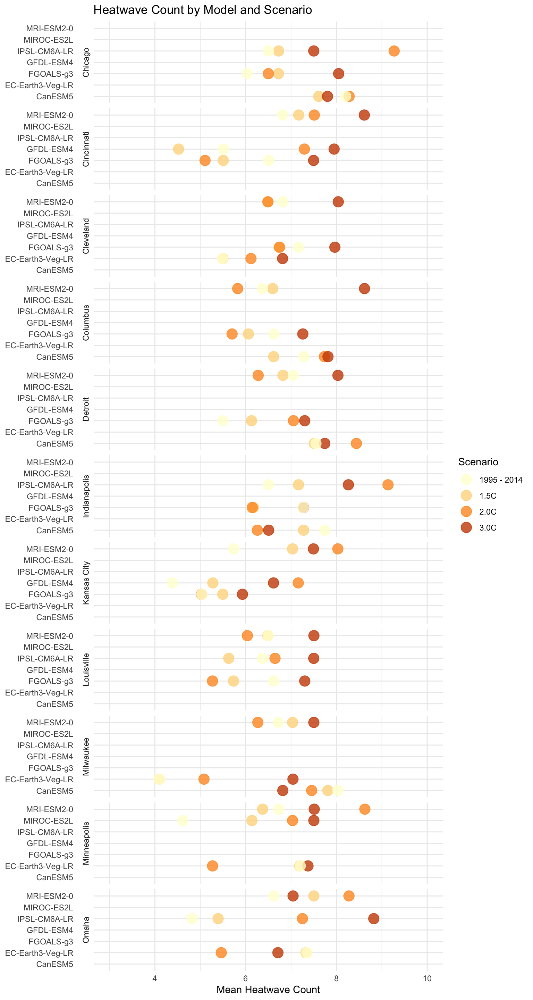
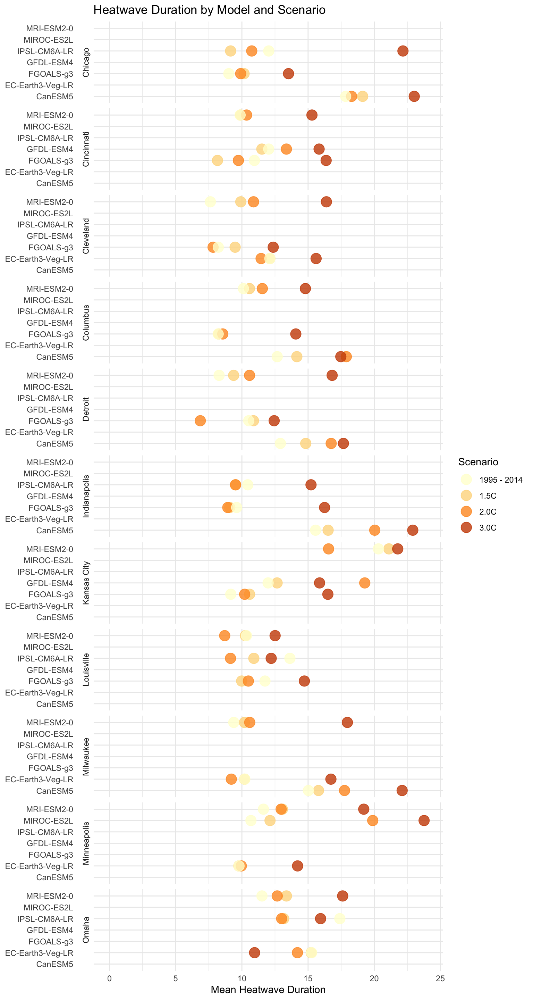

Midwest Climate Change
Kaitlyn Barbour
2024-11-11

Introduction
some text here about how midwesterners dont think climate change is an issue facing them
give context and set up the problem in terms of midwesterners
some chart / info from ANES
climate_data_all <- read_csv("climate-data.csv",
col_types = cols(loc_id = col_character()))
#View(climate_data)
cities <- c("Kansas City", "Omaha", "Minneapolis", "Louisville",
"Chicago", "Indianapolis", "Milwaukee", "Cincinnati",
"Columbus", "Detroit", "Cleveland")
hazards <- c("Tmax95pctl_days", "Tmax40_days", "Tmax35_days",
"Twb31_days", "heatwave_duration", "heatwave_count", "drought_days")
climate_data <- climate_data_all %>%
filter(city %in% cities, hazard %in% hazards)
climate_data$scenario <- factor(
climate_data$scenario,
levels = c("1995 - 2014", "1.5C", "2.0C", "3.0C")
)News Stories
insert links to news stories / headlines about increasing heatwaves & severe weather
make some graphics & hyperlink those images / links to their sources
35º Heating
what is the impact of 35º on people
electricity / health / etc
clickable buttons / tabs for the different degrees of heating
map - highlight each midwestern city - size of bubble = days above current heatwaves
various models are different colors - opacity to show the likelihood of different
should i handle threshold in this?
Tmax 95 percentile
localized to 95 percentile
similar version of map above
Heatwave Count
heatwaves are getting more frequent.
heatwave_count <- climate_data %>%
filter(hazard == "heatwave_count",
indicator == "expectedvalue")
average_increase <- heatwave_count %>%
group_by(scenario) %>%
summarize(avg_heatwave_count = mean(mean_estimate, na.rm = TRUE))
print(average_increase)## # A tibble: 4 × 2
## scenario avg_heatwave_count
## <fct> <dbl>
## 1 1995 - 2014 6.42
## 2 1.5C 6.42
## 3 2.0C 6.81
## 4 3.0C 7.51midwest can expect 6.4 -> 7.5 heatwaves depending on warming scenario
may “only be” one heatwave but that has big toll
show specific cities increasing
ggplot(heatwave_count, aes(x = mean_estimate, y = model, color = scenario)) +
geom_point(size = 5, alpha = 0.8) +
scale_x_continuous(limits = c(3, 10)) +
facet_grid(city ~ ., switch = "y") +
theme_minimal() +
theme(
strip.text.y = element_text(angle = 0),
axis.title.y = element_blank()
) +
labs(
title = "Heatwave Count by Model and Scenario",
x = "Mean Heatwave Count",
color = "Scenario"
) +
scale_color_brewer(palette = "YlOrBr") 
Heatwave Duration
not only will there be more heatwaves, but they will be longer
heatwave_duration <- climate_data %>%
filter(hazard == "heatwave_duration",
indicator == "expectedvalue")
ggplot(heatwave_duration, aes(x = mean_estimate, y = model, color = scenario)) +
geom_point(size = 5, alpha = 0.8) +
scale_x_continuous(limits = c(0, 24)) +
facet_grid(city ~ ., switch = "y") +
theme_minimal() +
theme(
strip.text.y = element_text(angle = 0),
axis.title.y = element_blank()
) +
labs(
title = "Heatwave Duration by Model and Scenario",
x = "Mean Heatwave Duration",
color = "Scenario"
) +
scale_color_brewer(palette = "YlOrBr") 
Tie back to news stories and human costs
what are the human costs of climate change going to be
how will people see this in their own lives
extreme weather scenarios
what is the big call to action here ??
feeling very … disillusioned with ‘democracy’ at the moment and dont want to tell people “oh just go vote” but i also dont want to tell people “okay no more plastic straws for you. you must bike everywhere”
the vibe for this feels more like “hey dummy you need to realize that climate change is going to impact you. yes you!!” and less of “time to start composting”
rmarkdown::render_site()